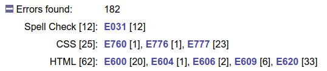

Documentation > Old Reports
This page describes the old (pre 17.0) reports and not the latest reports
Total Validator reports are standard web pages that can be read by any web browser. Three types of page are used; a Summary report, an Issue report and Page reports for each page validated. The Summary and Issue reports provide a summary of the tests performed, together with a list of links to the detailed Page reports for each page tested.
All the reports are stored in a folder called Results
and are normally overwritten each time you run a test. The location of this folder
is displayed in the Help > About menu and is normally within your Documents folder.
With the Pro version, you can change the name and location of these files using the Save to and Unique report options
Summary report
At the top is a link to the Issue report. Then a summary of the test including the options selected, and number of issues found:
Use the + and - buttons to expand or close each section. For example, you can
display more information about the errors found, with links to the reference
documentation:

Below this are the results themselves. If there are any issues that apply across all the pages tested, these will appear first, followed by a list of all the pages tested with a summary of the issues for each:
The Display issue details options are described later.
You can sort the list of page reports by Links (the order
in which the pages were tested), by Path
(alphabetic order), or by Most or Least number of issues.
Each page URL displayed is a link to a Page report containing the detailed results for that page.
Issue report
This starts with a link to the Summary report, followed by a summary section as before. Below this is a list of all the issues found broken down into Errors and Warnings, the different issue types, issue numbers and finally links to the Page reports:
Page report
Links back to the Summary report and Issue report are followed by a summary and then a representation of the page tested:
Usually the representation of the page shows each of the tags on a separate line, with indentation showing how the tags are nested within each other. This should make it easy to read the results even with the most poorly formatted source web page or where the layout style varies across the site. It is particularly useful when the pages are generated by a computer program, as these tend to generate the most irregular pages.
Similarly, CSS style sheets and statements within <style> tags are reformatted
and reorganised to allow errors to be easily reported on.
To make it easier to read the report, the Hide content checkbox toggles the display of text content and the Short report checkbox hides everything except those lines with issues. You can set these in advance using the Hide content and Short report options.
The line numbers refer to lines in the original source so you can quickly get to and amend the issue in the original source.
Line numbers marked as 0 refer to tags added by Total Validator. These may be optional tags that are implicit in the standards, or virtual tags used to display issues affecting the whole page.
Issue display
The image below shows an example of how an error is displayed. These
are highlighted and begin with an E
followed by a unique number for the error, then some explanatory text.
Probable errors begin with a P and warnings begin with a W.
There are also arrows next to the issue to allow you to quickly
navigate to other issues on the page.
If there is more than one error associated with a line then these are listed on separate lines before the tag itself:
By default, when you hover over an issue further information about it will appear:
Instead of hovering to display this information, you can always display these details
or always hide them using the Display issue details option at the top:

You can then click the issue text instead of hovering over it to toggle the details.
The same options also appear on the Summary report, where they apply to all the Page reports. With the Pro version you can set the default valuefor this in advance.
Spelling mistakes
Potential spelling mistakes are dealt with as shown in the image below. The word that is not recognised is highlighted and followed by a list of suggested replacements:

Note that the line number refers to the first line of the content containing the spelling mistake. If the content spans multiple lines it may not match the line with the mistake on.
When the Pro version is running, you can click on words it to add them to your own personal dictionary so they don't appear in future. For convenience, doing this will also remove the highlighting of the word from all the current page reports, and the link disabled.
Note that ad-blocking extensions and firewalls can prevent spell check corrections from being sent to the Pro application, so you may need to disable these on report pages.